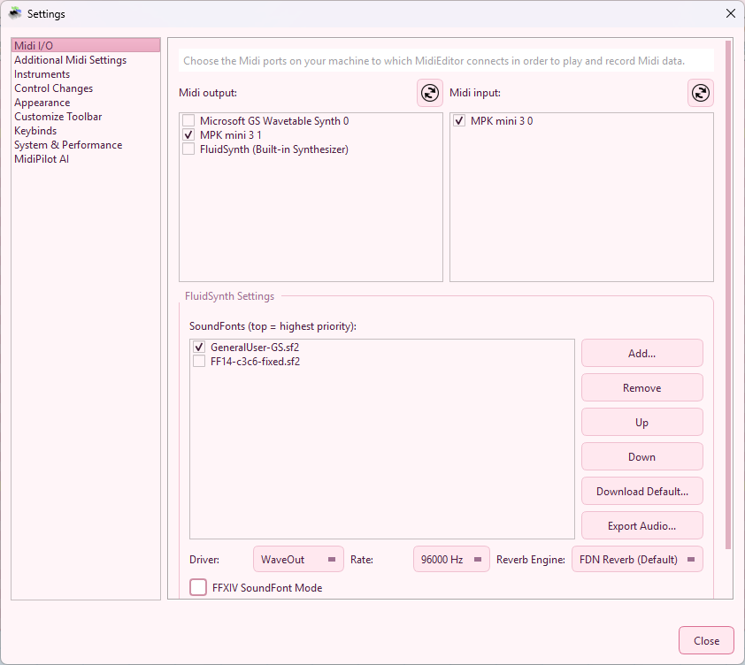

MidiEditor has to be correctly configured in order to be able to send data to a Midi device which is connected to the computer and (if required) to receive any data in order to allow recording. If not correctly configured, MidiEditor can be used to edit Midi files; however, you won't be able to listen to the music.

To select the input or output device click "Settings.." in the midi menu in the menubar. In the list on the left-hand side of the upcoming dialog, please select the card "Midi I/O". This will show two lists which show all available input/output devices.
Select in-/and output from the lists and click "Close".
On startup, MidiEditor will always try to connect to the devices which have been used during the last session.
A lot of Midi devices which allow you to input Midi data are not audible but need a connected computer to generate sounds (similar to MidiEditor). When having chosen a valid output device, you can pass all notes played at the input device to the output device which makes the played notes audible. Select the option "Connect Midi In/Out" in the midi menu in the menubar or in the toolbar.
There are a lot of synthesizers MidiEditor can use to produce its sound with. However, some of those synthesizers have to be started each time you start MidiEditor, as they are not running by default.
To start a software each time when MidiEditor is started, you can set a start-command which is executed at each startup of the editor. To enter this command, click the menu entry "Settings..." in the midi menu in the menubar. Select the card "Additional Midi Settings" and enter your start command in the according field. The output of the started component will be visible (after the next startup) in the text area below this field.
MidiEditor connects to internet at each startup in order to check whether a new version of MidiEditor is available. If so, you will be notified and asked to download the new version.
In order to make sure, that MidiEditor can connect to the internet configure your firewall accordingly. To disable the automatic update checker, please open the settings dialog, chose the card "Updates" and deselect the checkbox.
Some old Midi devices may not support the full Midi instruction set. Hence, these devices may not stop the currently played notes when you click the stop button. MidiEditor provides a solution for this, which can be activated in the "Additional Midi Settings" card in the settings dialog. In order to activate it, check the checkbox "Manually stop notes". This should not be used when your Midi device does stop the playback whenever requested.
MidiEditor allows you to start with a larger playback toolbar. This is necessary when using the editor while beeing seated at your digital piano. The editor has to be started along with the command-line argument --large-playback-toolbar. On linux, use the command line to start MidiEditor. On windows, right-click on the desktop-shortcut and select "Properties". Add the argument --large-playback-toolbar to the target field as shown below.